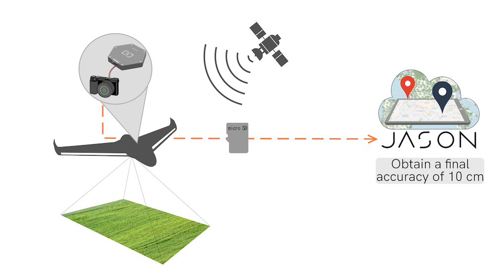
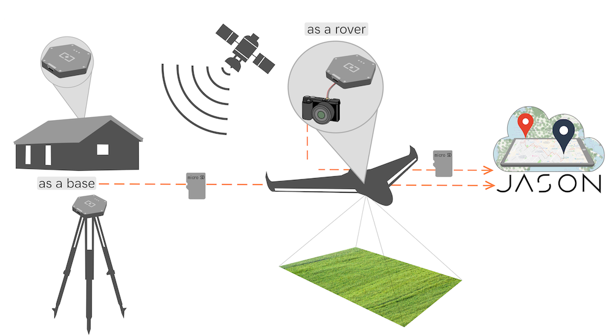

Welcome to Jason documentation
Jason is Rokubun's Cloud PPK Service, a cloud service that compute the position of a receiver using the raw GNSS measurements.
Jason works on a best-effort basis: it will attempt to compute the best possible solution using a differential technique known as Post-processing Kinematic (PPK), which is the post-processing version of the Real Time Kinematics (RTK). These techniques combine GNSS measurements from nearby reference stations with those of the rover being positioned to cancel out most of the common errors (ionosphere, troposphere, ...). By nearby it is usually considered less than 50km apart. Depending on the input format you provide, centimetric accuracies can be achieved.
You do not have a reference station? Worry not! we have you covered, Jason will automatically look for a suitable reference station (CORS), among the ones regularly monitored by the service, and use it to try to achieve the best possible accuracy for your data.
Features
- Ease of use, drag and drop GNSS files
- Process various input formats (RINEX, ublox, Septentrio, Android GNSS Logger, ...)
- Georeference time (e.g. camera trigger) events, which is relevant for the photogrammetry use case
- Differential positioning for greater accuracy without the need to deploy a base station, Jason will automatically search/fetch/use the closest base station among the database of more than 7000 stations tracked by our servers
- Application Programming Interface (API) to automate your GNSS data processing workflow. You can include it in your application pipeline without the need to go through the front-end.
- Data conversion service for Argonaut/Medea owners: generate Rinex file, IMU data and time trigger (cam) events from a binary file logged by the receiver.
Use cases
Jason aims at providing a platform of various potential services and use cases that share the same common need: accurate navigation. Examples of such services and applications follow:
Photogrammetry
Jason was created with the photogrammetry workflow in mind: a drone logs both raw GNSS data as well as triggers several photographs, whose time tags are also logged by the receiver (Argonaut supports that as well as the NEO-M8T and ZED-F9P chipsets from ublox). The operator does not worry about base station because he has previously ensured that the campaign area is under Jason coverage.
Once the campaign is over, the operator uploads the data to our service, which will automatically find the closest base station available and compute both the navigation solution (ideally using PPK) as well as georeference any time (camera) event present in the input file. This data can be later used in further steps of the processing.

This use case is the one covered in the quick start of the manual
End-to-end PPK
This use case is similar to the previous case (an operator that performs a data campaign where GNSS raw measurements can be logged for later processing), but outside the coverage of Jason. In this case the operator provides her own base station that is active during the campaign, also logging GNSS raw measurements.
This data is then uploaded in the service, as describe in this example.

Coverage
The data from the reference stations come from a set of world-wide public providers such as International GNSS Service or EUREF as well as smaller national and regional networks such as the Institut Cartogràfic i Geològic de Catalunya and the like.
In total, we continuously monitor the availability of more than 7000 CORS stations distributed worldwide. Some areas are better covered than others but unfortunately we cannot provide global coverage.